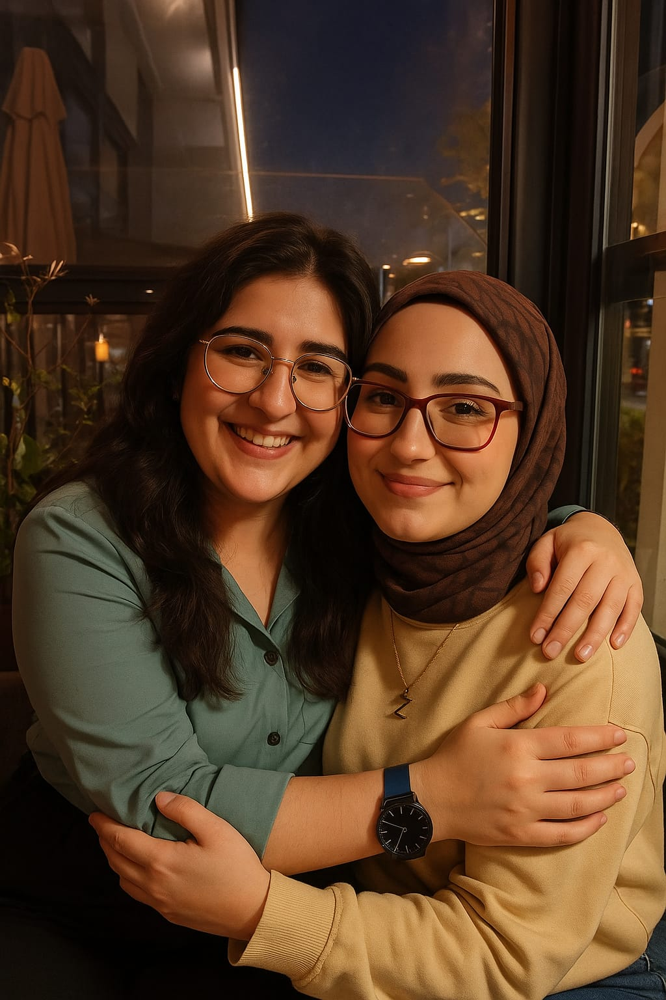

Kahverengi gözlerinde kayboldum bir kere,
Mesafe ne ki, gönlüm çoktan seninle.
Ekran ışığında değil, teninde ısınmak var içimde,
Ve biliyorum… bir ay kaldı sana.
Sesin çalıyor kulağımda her gece,
Gülüşün yetiyor, sanki yanımdaymışsın gibi.
Ama dokunmak başka, göz göze gelmek başka,
Bir ay kaldı... sabır, diyorum kendime.
Zaman bazen ağır, bazen umutlu geçiyor,
Kalbim her geçen gün biraz daha sen oluyor.
Senin o gözlerin yok mu… kahverengi ve derin,
"Ben bu kıza aşık olurum ya," dedirten cinsten.
Hayalini çizdim bile sarılacağımız anın,
Kafanı omzuma koyduğun o ilk dakikanın.
Uzaklığa inat, kalpten bağlıyız biz,
Ve bu aşk, mesafeyle değil, kavuşmayla övünür.
Bir ay kaldı…
Sonra kelimeler susar, eller konuşur.
Göz göze geliriz, dünya susar,
Sadece biz oluruz… sen, ben ve o kahverengi bahar.